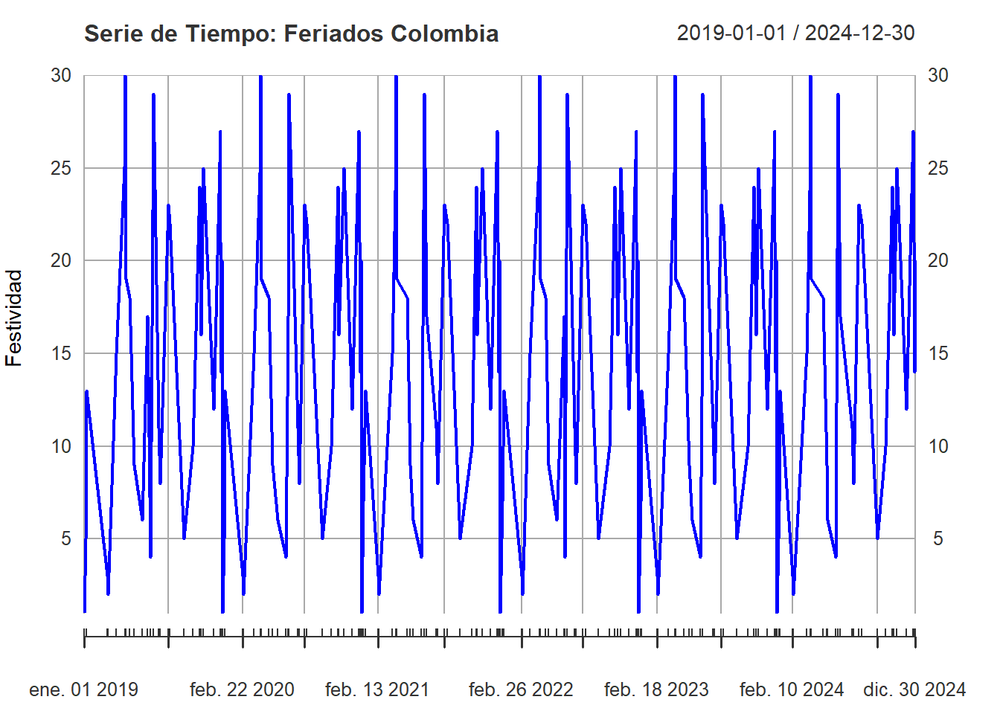

3 DIAS FESTIVOS EN COLOMBIA Y ESTADOS UNIDOS
3.1 Set de datos con los dias festivos en Colombia
Se incluye en este set de datos otras festividades de Colombia que no necesariamente estan marcadas como dias festivos, pero son importantes para los modelos.
## # A tibble: 6 × 3
## Fecha Dia_Semana Festividad
## <dttm> <chr> <chr>
## 1 2019-01-01 00:00:00 Martes Año Nuevo
## 2 2019-01-06 00:00:00 Domingo Día de la Epifanía
## 3 2019-01-07 00:00:00 Lunes Día de los Reyes Magos
## 4 2019-03-02 00:00:00 Sábado Carnaval de Barranquilla (Inicio)
## 5 2019-03-05 00:00:00 Martes Carnaval de Barranquilla (Fin)
## 6 2019-03-25 00:00:00 Lunes Día de San José3.2 Set de datos con los dias festivos en Estados Unidos
Se incluye en este set de datos otras festividades de Estados Unidos que no necesariamente estan marcadas como dias festivos, pero son importantes para los modelos.
# Carga de festivos en Estados Unidos
festivos_eeuu <- drive_get("Festivos_EEUU_2019_2024.xlsx")
drive_download(festivos_eeuu, path = "Festivos_EEUU_2019_2024.xlsx", overwrite = TRUE)
fest_eeuu <- read_excel("Festivos_EEUU_2019_2024.xlsx")
head(fest_eeuu)## # A tibble: 6 × 3
## Fecha Dia_Semana Festividad
## <dttm> <chr> <chr>
## 1 2019-01-01 00:00:00 Martes Año Nuevo
## 2 2019-01-21 00:00:00 Lunes Día de Martin Luther King Jr.
## 3 2019-02-14 00:00:00 Jueves Valentine's Day
## 4 2019-02-18 00:00:00 Lunes Día de los Presidentes
## 5 2019-03-17 00:00:00 Domingo St. Patrick's Day
## 6 2019-05-12 00:00:00 Domingo Mother's Day3.3 Series de datos para feriados en Colombia y Estados Unidos
3.3.1 Colombia
## [,1]
## 2019-01-01 1
## 2019-01-06 7
## 2019-01-07 13
## 2019-03-02 3
## 2019-03-05 2
## 2019-03-25 15## [1] "xts" "zoo"## [1] "2019-01-01 UTC"## [1] "2024-12-30 UTC"
Prueba de Dickey-Fuller Aumentada (ADF)
##
## Augmented Dickey-Fuller Test
##
## data: serie_fest_col
## Dickey-Fuller = -10.742, Lag order = 5, p-value = 0.01
## alternative hypothesis: stationary3.3.2 Estados Unidos
## [,1]
## 2019-01-01 1
## 2019-01-21 8
## 2019-02-14 15
## 2019-02-18 6
## 2019-03-17 14
## 2019-05-12 12## [1] "xts" "zoo"## [1] "2019-01-01 UTC"## [1] "2024-12-25 UTC"Prueba de Dickey-Fuller Aumentada (ADF)
##
## Augmented Dickey-Fuller Test
##
## data: serie_fest_eeuu
## Dickey-Fuller = -6.0964, Lag order = 4, p-value = 0.01
## alternative hypothesis: stationary3.4 Tratamiento al set de datos original
Inicialmente se agrupa la informacion or fecha de origen y canal para obtener el total del monto en dolares.
## # A tibble: 6 × 3
## Fecha_Origen Canal Monto_Total_USD
## <date> <chr> <dbl>
## 1 2019-01-01 APN 14287.
## 2 2019-01-01 Corresponsales 723701.
## 3 2019-01-01 RedPropia 2528309.
## 4 2019-01-02 APN 26896.
## 5 2019-01-02 Corresponsales 891710.
## 6 2019-01-02 RedPropia 3033960.Seguidamente, se transforma la coluna Canal, de tal forma que se visualice el porcentaje del monto que se origino por cada uno de ellos, reduciendo a una sola fila por cada fecha de origen de la remasa.
## # A tibble: 6 × 5
## Fecha_Origen Porcentaje_APN Porcentaje_Corr Porcentaje_RP Monto_Total_USD
## <date> <chr> <chr> <chr> <dbl>
## 1 2019-01-01 0.44% 22.16% 77.41% 3266297.
## 2 2019-01-02 0.68% 22.56% 76.76% 3952565.
## 3 2019-01-03 1.24% 22.46% 76.3% 3305953.
## 4 2019-01-04 1.75% 20.47% 77.78% 2664262.
## 5 2019-01-05 0.74% 20.61% 78.65% 2873657.
## 6 2019-01-06 0.24% 22.19% 77.57% 2987190.3.4.1 Variable festivo en colombia
Se añade la columna Festivo_Col al set de datos tratado anteriormente, dicha columna permite identificar con un 1 si el dia de originacion es festivo o 0 en caso contrario.
## # A tibble: 6 × 6
## Fecha_Origen Porcentaje_APN Porcentaje_Corr Porcentaje_RP Monto_Total_USD Festivo_Col
## <date> <chr> <chr> <chr> <dbl> <dbl>
## 1 2019-01-01 0.44% 22.16% 77.41% 3266297. 1
## 2 2019-01-02 0.68% 22.56% 76.76% 3952565. 0
## 3 2019-01-03 1.24% 22.46% 76.3% 3305953. 0
## 4 2019-01-04 1.75% 20.47% 77.78% 2664262. 0
## 5 2019-01-05 0.74% 20.61% 78.65% 2873657. 0
## 6 2019-01-06 0.24% 22.19% 77.57% 2987190. 13.4.2 Variable festivo en Estados Unidos
Se añade la columna Festivo_eeuu al set de datos tratado anteriormente, dicha columna permite identificar con un 1 si el dia de originacion es festivo o 0 en caso contrario.
## # A tibble: 6 × 7
## Fecha_Origen Porcentaje_APN Porcentaje_Corr Porcentaje_RP Monto_Total_USD Festivo_Col Festivo_eeuu
## <date> <chr> <chr> <chr> <dbl> <dbl> <dbl>
## 1 2019-01-01 0.44% 22.16% 77.41% 3266297. 1 0
## 2 2019-01-02 0.68% 22.56% 76.76% 3952565. 0 0
## 3 2019-01-03 1.24% 22.46% 76.3% 3305953. 0 0
## 4 2019-01-04 1.75% 20.47% 77.78% 2664262. 0 0
## 5 2019-01-05 0.74% 20.61% 78.65% 2873657. 0 0
## 6 2019-01-06 0.24% 22.19% 77.57% 2987190. 1 0